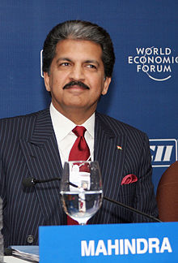

After graduating from Harvard Business School, Anand Mahindra joined Mahindra
Ugine Steel Company Ltd (MUSCO), as Executive Assistant to the Finance Director.
In 1989 he was appointed President and Deputy managing director of the company.
In the summer of 1991, he was appointed Deputy managing director of Mahindra &
Mahindra Ltd., a producer of off-road vehicles and agricultural tractors in
India.
During his time at M&M Ltd., Anand initiated a comprehensive change program to
make the company an efficient and aggressive competitor in the newly liberalised
economic environment in India. In April 1997, he was appointed managing director
of Mahindra & Mahindra Ltd, and in January 2003 given the additional
responsibility of vice-chairman. On 9 August 2012, he was appointed chairman and
managing director. Anand is also a co-promoter of Kotak Mahindra Finance Ltd,
which was converted into a bank in 2003.
Under Anand Mahindra's leadership, the Mahindra group has grown beyond making
steel and tractors. Today the Group makes SUVs—in India and South Korea
(Ssangyong) with exports to Latin America, Africa, Europe and South East Asia.
Mahindra Tractors is the world's largest tractor company by volume, selling
tractors in India, China and the US. The group also makes electric cars,
motorcycles, scooters, trucks,yachts, and aircraft. Mahindra Systech, makes auto
components across five continents. Tech Mahindra is the fifth largest IT
services and IT consulting company in India. Mahindra Retail (Mom & Me) sells
products for expecting mothers and babies Almost 200,000 people choose Club
Mahindra Holidays as their preferred holiday package provider. Mahindra
ShubhLabh Services is India's largest exporter of grapes and pomegranate.
Mahindra & Mahindra Financial Services Limited is the largest non-banking
finance company in rural India. Mahindra Solar is making inroads in solar farms
and Mahindra Lifespaces is a leader in sustainable urban development.
Today, the Mahindra Group is a US$16.5 billion organisation, and one of India's
top 10 industrial houses.
Anand Mahindra has been tagged as the face of Indian capitalism by The
Economist.Forbes India Magazine has recognised him as their 'Entrepreneur of the
Year' for the year 2013.
Beyond Mahindra:
Anand Mahindra was recently appointed to the board of U.S.–India Business
Council (USIBC). As a member of the board, Anand helps promote the policy
advocacy priorities of USIBC and advice members and senior USIBC staff on a wide
range of topics.Anand also serves as the Honorary Ambassador of Foreign
Investment Promotion for the Republic of Korea,and is a member of the
International Advisory Council of Singapore's Economic Development Board, which
is the lead government agency for planning and executing strategies to enhance
Singapore's position as a global business center.
He is the co-founder of the Harvard Business School Association of India, an
association dedicated to the promotion of professional management in India. An
avid advocate of using 'design for human happiness', Anand is the chairman,
Governing Council National Institute of Design and President, India Design
Council.
He is the Founder Chairman of the Mumbai Festival,which was launched in January
2005. The event is the first comprehensive festival to celebrate the rich
cultural diversity of the city. He is also the Chairperson of Public Health
Foundation of India (PHFI).
He has also served as President of the Confederation of Indian Industry in
2003–04 and has been President of the Automotive Research Association of India
(ARAI). He also served on the Boards of the National Stock Exchange of India and
the National Council of Applied Economic Research, and as a member of the
Council of Scientific & Industrial Research